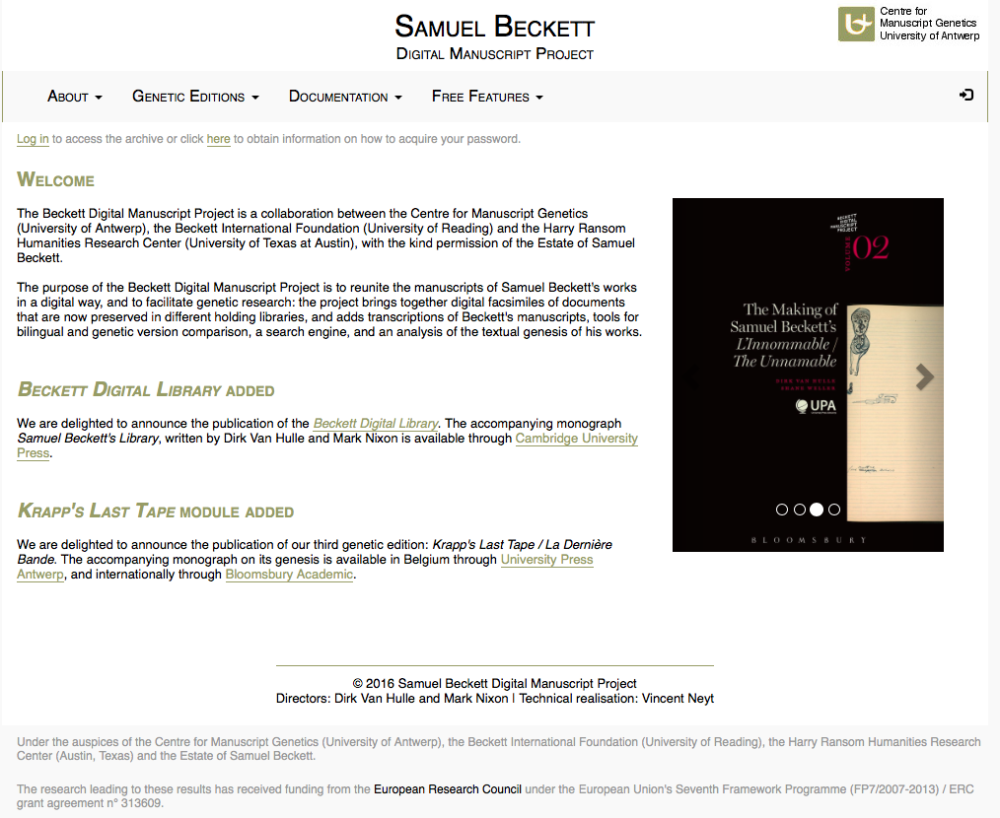
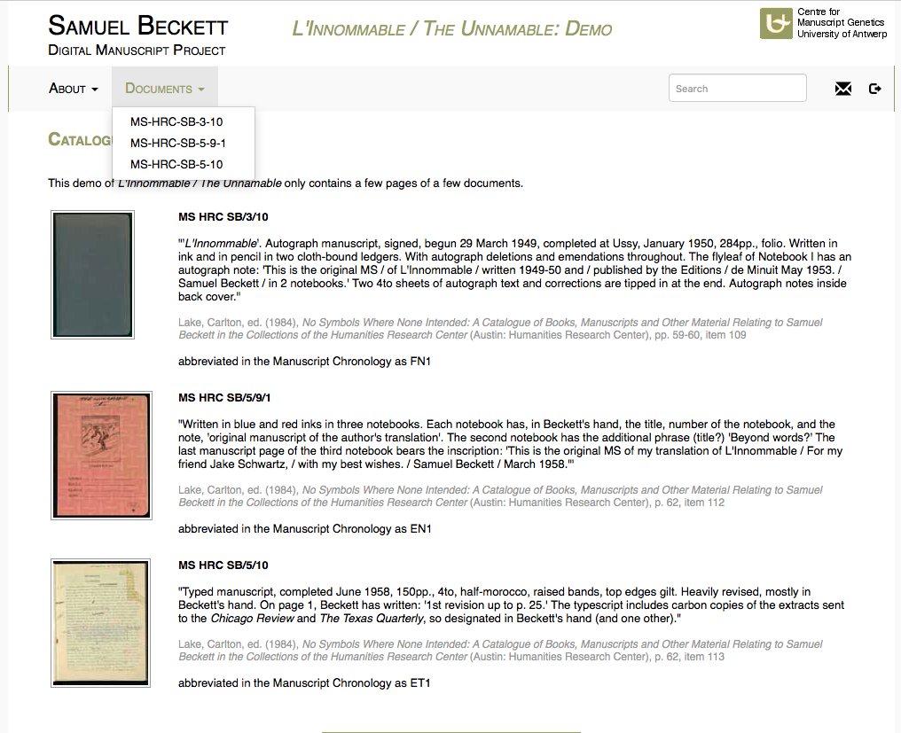
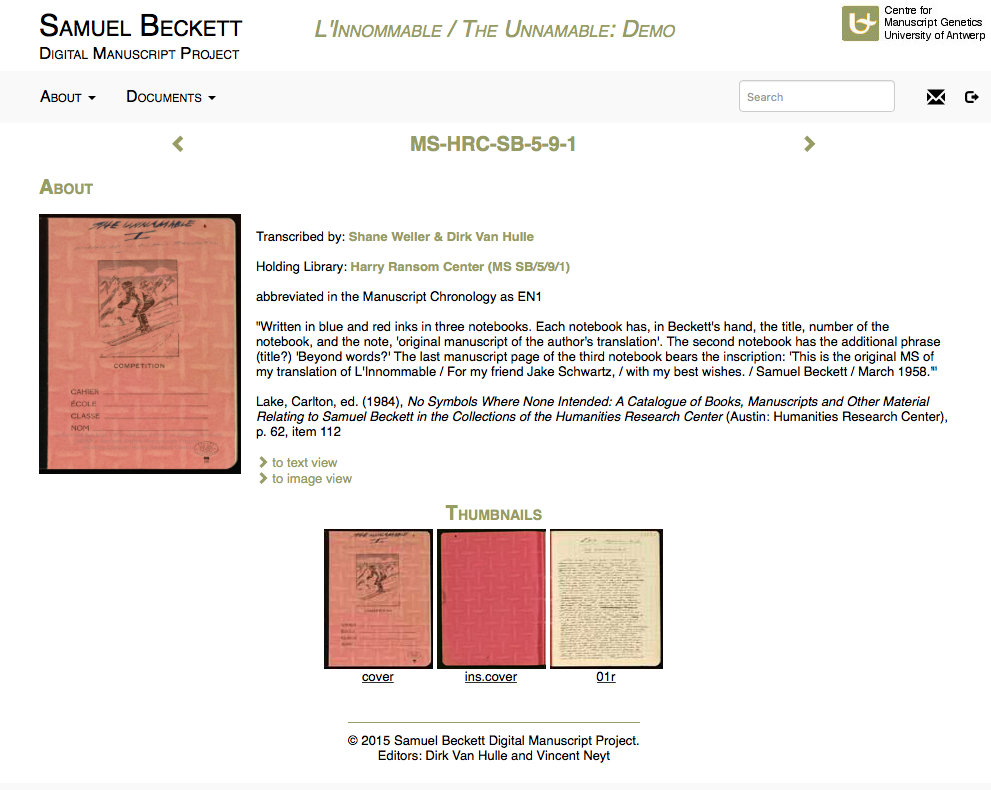
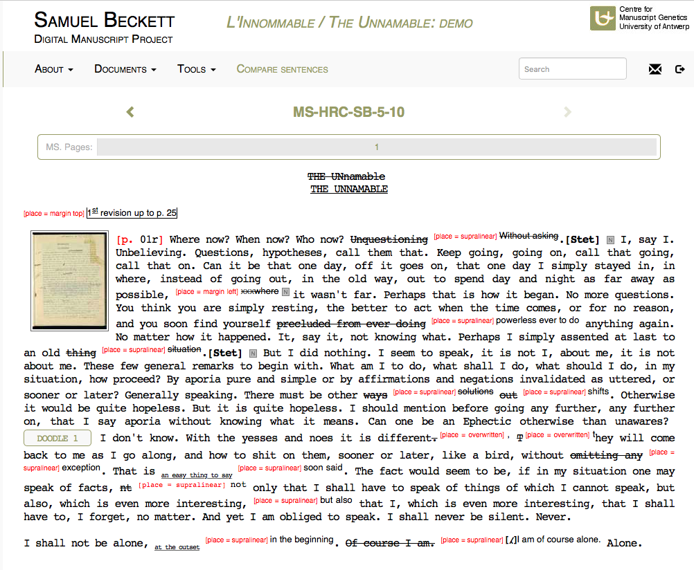
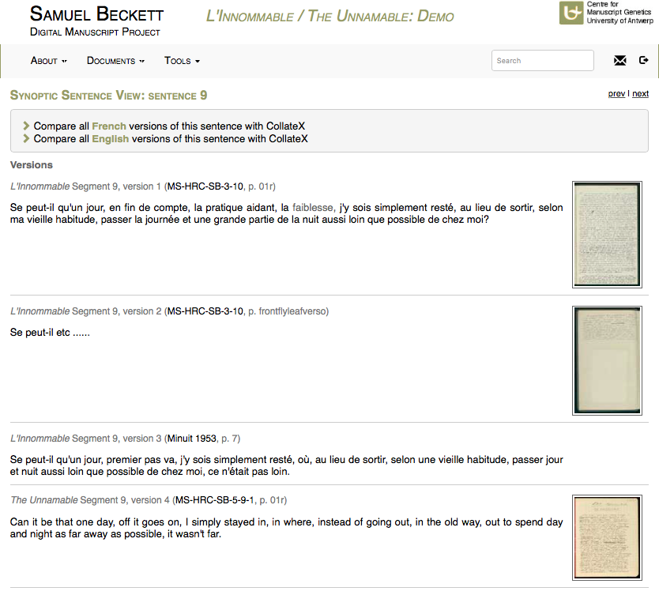
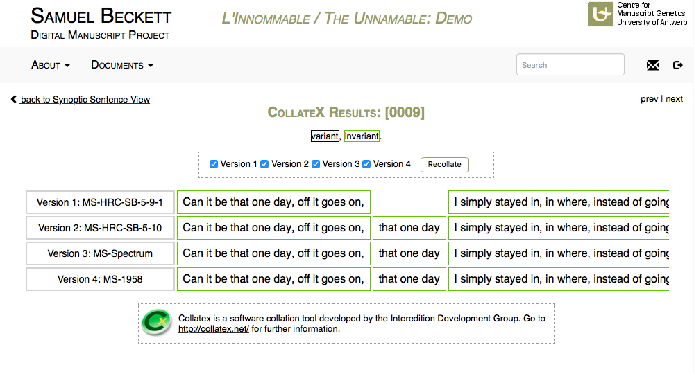
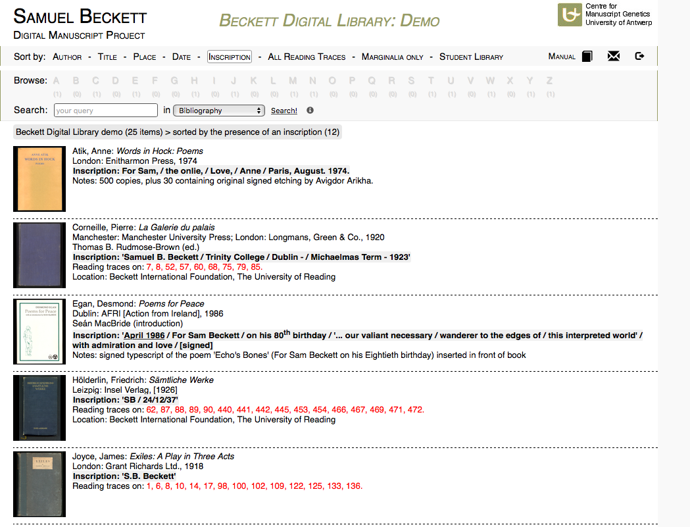
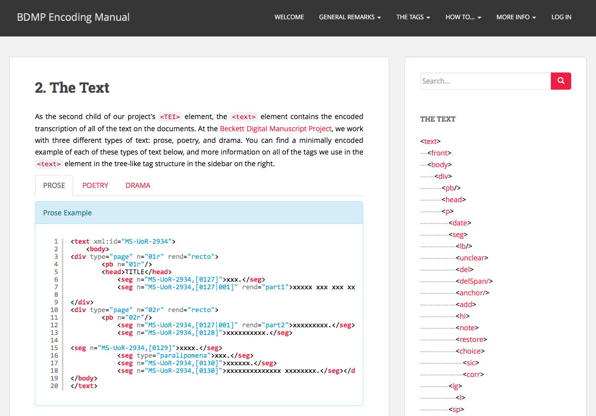
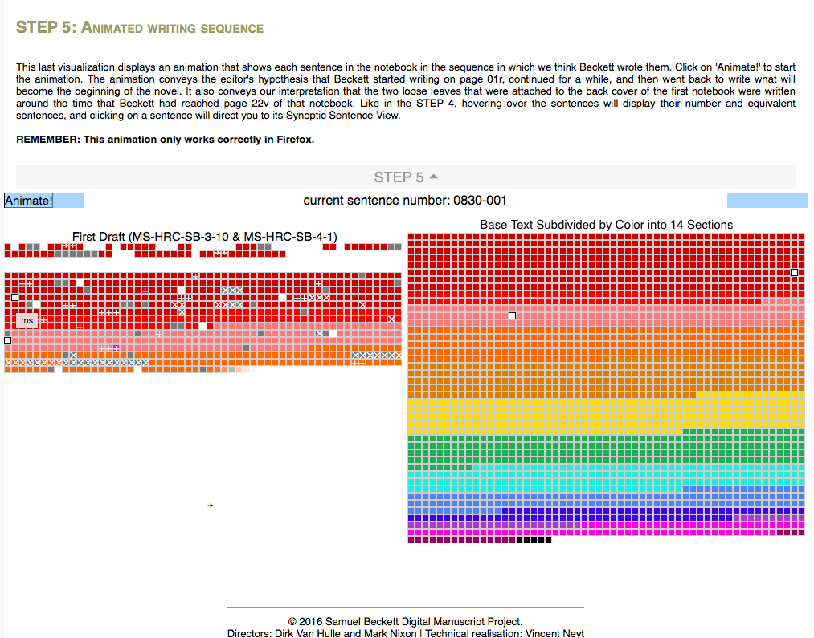

Literary drafts, genetic criticism and computational technology. The Beckett Digital Manuscript Project
Table of Contents
- Abstract
- Introduction
- Digital editing of Beckett’s bilingual drafts
- Editorial strategy and representation of primary sources
- Data modelling
- Technical infrastructure
- Content design and presentation
- The Beckett Digital Library: reading traces and exogenesis
- Site interface, navigation and searching
- Documentation, user engagement and spin-offs
- Publication model, copyright and sustainability
- Concluding remarks
- Bibliography
- Notes
Abstract
This article addresses the Beckett Digital Manuscript Project, an evolving project, currently comprising a series of digital genetic editions of Samuel Beckett’s bilingual literary drafts and a digital library. Following the genetic school of editing, the project’s goal is to explore and represent as fully as possible the evolutionary dynamics of Beckett’s composition process. The robust editorial framework alongside the sophisticated technical development and design of the project succeed to manage a vast amount of complex primary material and to offer an insight into Beckett's writing, by enabling multiple processing of facsimiles, transcriptions and comparisons of variants in a user-friendly way. The 'Beckett Digital Library' further enables a comprehensive approach to the concept of textual genesis and to Beckett's intellectual influences. Moreover, the project contains exemplary documentation as well as a number of spin-off outputs. However, key improvements could still be made mainly to its publication and business strategies, currently a subscription model, in order to increase the access to the project and its further contribution to the scholarly community.
Introduction
The Beckett Digital Manuscript Project (BDMP) stands as an exemplary case in the fields of textual scholarship, genetic criticism and digital editing. Before discussing the BDMP in the light of digital genetic editing of modern manuscripts, it is useful to briefly sketch an overview of the history and goals of genetic criticism and then to place and further argue on the BDMP’s contribution within this scholarly area.1
The invention of print not only heralded the emergence of the printed book, but also the acquisition of another textual asset: the modern manuscript.2 While in the 19th and early 20th century interest in writers’ working manuscripts was limited to concerns for their preservation, in the second half of the 20th century literary drafts evolved into a distinctive object of scholarly research. Modern literary drafts became at once an editorial headache and a challenge to modern textual scholars; it might not be an exaggeration to suggest that literary drafts became the scholarly lieu par excellence through which to map parallel developments in literary theory, textual criticism and computer science.
A series of seismic conjunctures in literary theory – and particularly the influence of structural linguistics and post-structuralism which "shed light upon the relations that form among, and give meaning to, all the elements of the text" (Hay 1979, 230-231) – led to a substantial overhaul and problematization of the concepts of textuality, the materiality of writing, the status of the author as well as the nature of (textual) representation. This shift of interest from the literary object as a final product to aspects of the writing process (écriture) and to mechanisms of textual production initially served as the ideal repertoire for the study of Heinrich Heine’s manuscripts, acquired by the Bibliothèque Nationale de France in 1966. The study of literary drafts gradually gained institutional support in France (Centre d’ Analyse des Manuscrits (1976) & Institute des textes et manuscrits modernes (1982)) while the collaborative research environment inaugurated a scientific scholarly approach to textual genesis, i.e. genetic criticism (critique génétique).
The school of genetic criticism signals a new direction in the field of textual studies by locating its main object of research not in the ‘text-as-we-used-to-know-it’ but rather in the writers’ working manuscripts, what Bellemin-Nöel terms "avant-textes" (Bellemin-Nöel 1972). It thus elaborates a textual theory of "writing poetics" rather than one of "textual poetics" (Debray Genette 1979, 24) and an editing model for "manuscript genetics" rather than one for ‘textual genetics’ (De Biasi 1996, 37-38). These ‘avant-textes’ transcend traditional textual typologies and are studied as "complex semiotic objects" as they illuminate authorial alterations or variants, the dynamic traces of the writing process, which are the markers of a new textuality with a distinct ‘chronotoposensitivity’ (Ferrer 1998, 262-263).
Given that genetic criticism’s focal point is "not to produce a printable text but rather […] to seize and describe a movement, a process of writing that can only be approximately inferred from the existing documents" (Deppman, Ferrer & Groden 2004, 11), the genetic critics’ primary assignments are the following: on the one hand, the genetic task is to make manuscripts readable and accessible, to decipher the material evidence found there; on the other hand, its broader task is to attempt a critical interpretation of the composition history and to reconstruct and analyse the operations involved over the course of the genetic stages. This spatial deciphering and temporal unfolding of the writing process can be observed both on a macrogenetic level, by compiling a succession/evolution of genetic documents/versions in the ‘dossier génétique’, and on a microgenetic level, by reconstructing the genetic relations between the authorial variants in each genetic document separately. A full ‘lecture génétique’ is the product of these two procedures and constitutes "a form of criticism of its own" (Deppman, Ferrer & Groden 2004, 2).
Though various forms of genetic editions of drafts (e.g. ‘literal or diplomatic transcription’, ‘linear diplomatic transcription’, ‘synoptic or linear edition’) were proposed and tested over the years, all of them have been criticised for their inability, due to the codex-based limitations, to adequately represent the dynamic process of writing. If it is the textual material in question that increasingly becomes a "stimulant […] to the pursuit of new […] editorial tools" (McGann 2001, 81), then computational technologies have, since 1970, acted as catalysts for the development of a new editorial model for genetic textuality. From early computer software programs able to categorise authorial alterations in the form of lists (‘automatic edition’) to hypertextual systems capable of hosting, visualising and navigating the multitude of pathways through the whole genetic dossier and lately to proposals for a genetic encoding scheme able to mark up documentary features and the temporal evolution of the writing flow, all these attempts conduce to confirm Gabler’s argument that "the editing of manuscripts [...] belongs exclusively in the digital medium, as it can only there be exercised comprehensively" (Gabler 2010, 52).
Genetic criticism has, from the offset, been related with modernist writers’ archives and works. Modernist authors themselves vested their efforts in exploring novel techniques with which to express the experience of reality and thus cultivated a profound sensitivity to the materiality and the temporality of their composition by "emphasiz[ing] ‘writing’ as a verb rather that a noun" (van Hulle 2004, 47). Such a rationale might explain the complex composition and publication history of their works but also why many of them preserved and donated their drafts to libraries and archives, with the implicit desire that their texts should be studied as more than finished products. Given that the Modernist period constituted the Golden Age of manuscripts, McGann’s and especially Bornstein’s work in Modernist studies and textual scholarship proved instrumental in directing scholarly and editorial attention to the ‘bibliographic (non-literary) codes’ of Modernist works (Yeats, Pound, Joyce, Beckett), by pointing to the "semantics of [...] materiality" of their literary production and publication (Bornstein 2001, 46). Not surprisingly, thus, digital genetic criticism is a growing field of interest in Modernist studies.
Digital editing of Beckett’s bilingual drafts
Among Modernist writers, Samuel Beckett stands as a "paradigmatic author of manuscript genetics" (van Hulle 2008, 192). Samuel Beckett (1906-1989), the Irish avant-garde writer who spent most of his life in Paris, was one of the 20th century's most original and important literary figures, a Nobel laureate (1969) and a distinctive voice of European Modernism. Beckett’s work, pluralistic in its development, genuinely transcends genre distinctions (prose, poetry, drama, radio plays, etc.) as well as norms of literary expression, while creatively interrogating the language vehicle (French, English). Beckett preserved an abundance of material evidence of the genesis of his works; so much that, according to Dirk van Hulle, "the writing process becomes an integral part of his work" (van Hulle, 2008, 121).
The study of Beckett’s archive, containing bilingual heterogeneous literary drafts (holograph manuscripts, typescripts, notebooks) as well as secondary material (the author’s library and miscellanea), coupled with the attempt to create scholarly editions of his works by taking into account the various iterations from the manuscript to the final form exceed the textual and bibliographic fields and function as a way to understand main literary aspects of Beckett’s oeuvre. What a genetic study of the composition history of these works reveals is a poetic anxiety regarding revision, authorial re-interpretation and self-translation, (in)completion, and a fascination with deliberate false beginnings and dead ends, lacunae and paralipomena. All these are textual materializations of Beckett’s thematic despair and failure "which in a paradoxical way turns it into an even more radical chaosmos" (van Hulle 2008, 193). In addition, all these genetic traces bear witness to an extremely persistent and ingenious writer, as "writing is for Samuel Beckett an excruciatingly arduous task and he typically uses the personal challenges of this task as raw material for his fiction" (Smith 1982, 107). While print format limitations prevent a genetic study of Beckett’s bilingual drafts, digital technology offers the means to document in full his writing mechanisms dynamically and the complex evolutionary dynamics of his writing. To this end, the Beckett Digital Manuscript Project (BDMP) stands as the first to take up such an undertaking.

The genetic study of Beckett’s bilingual manuscripts has a long and interesting pre-history, given, for instance, the 'in-house' genetic edition of four works by Samuel Beckett (a cooperation between the Universities of Antwerp and the University of Reading) and the noteworthy Garland series of bilingual variorum editions of Beckett’s works edited by Charles Krance (Krance 1996). Nevertheless, the inefficiency of complex print-based analytical tools that they employed (synoptical apparatus, variant synopses) forbids from the outset a comprehensive and in-depth comparative analysis of Beckett’s oeuvre. The BDMP, as stated in the ‘Series preface’, aims to overcome these inadequacies of the codex form in length and functionality and to "function both as a digital archive and as a genetic edition […] in that [it] digitally reunites the manuscripts of Samuel Beckett's works and facilitates the exploration and examination of the genetic dossier from diverse perspectives". This ‘tension’ between the digital reunification of manuscripts and the computationally enabled critical reconstruction of the dynamics of Beckett’s composition process, – also evident in the linguistic manoeuvre between the label ‘archive’, found in the URL, and the actual name of the project – is what, in my view, makes of the BDMP an exemplary attempt of a lecture génétique.
Editorial strategy and representation of primary sources
According to its main editorial statement, the BDMP situates itself within the tradition of genetic criticism by focusing on the "critical aspect [of the] reconstruction of the dynamics of the composition process", which also reveals an encounter with the principles of textual scholarship. The goal of the BDMP is mirrored in this double task of genetic criticism: the accessible representation/transcription and the critical analysis of textual genesis, the abovementioned tug-of-war between archive and edition. To this end, facsimiles and full transcriptions of all versions of the works are provided while the data modelling and content design further enable the user to zoom on and compare any textual unit to the corresponding unit in all of the other versions in both languages. A literary and historical introduction to Beckett’s oeuvre would also be welcome here; this absence can be explained by the focus on a specialised scholarly audience, already familiar with his work and place in literary history.
Facsimiles of Beckett’s drafts, currently under the Estate of Samuel Beckett’s copyright and dispersed across various libraries around the globe, are presented in high-quality digital images with a watermark containing the copyright disclaimer notice. The archival identification (numbering) of the facsimiles is conducted following holding libraries’ systems while a full bibliographical description based on the existing manuscript catalogues is also provided.
As far as the transcription of the drafts is concerned, the BDMP offers two different methods of transcription alongside the facsimile of each original draft: a topographic/document-oriented transcription and a linear/text-oriented transcription. The topographic transcription aims to graphically mimic the layout of the original document (the font, the type of paper, and writing tools). Without prioritising either interpretation and through its very content architecture and interface, the BDMP suggests the combination of those two transcriptions, arguing that "they are both transformations, and the combination of a topographic with a linear transcription proves to be an adequate way to perfect the approximation of the original". Or, in van Hulle’s words, "by means of ‘code switches’ between an image-based and a text-based approach (analogous to McGann’s bibliographical and linguistic codes), digital philology […] contribute[s] to an enhanced bibliographical awareness" (van Hulle 2009, 454).
By employing a sophisticated encoding scheme and a well designed content architecture, the BDMP succeeds in genuinely and flexibly visualising and processing the primary material in a variety of contexts and ways, based on Ted Nelson's "principle of transclusion" (Nelson 1993) or, as Sahle terms it, on its "modularised structure" (Sahle 2016, 29): different visualisations of each document's data and of the text’s evolution, dynamic comparisons of compositional and translation variants.
Data modelling
These editorial decisions are also reflected in the digital edition’s encoding design, which is based on Extensible Markup Language (XML) using the Guidelines of the Text Encoding Initiative (TEI P5); the encoding is validated against a customized schema created by Roma. The robust documentation of the digital edition coupled with the fact that the registered user can also access the XML files enable us to observe and further discuss the encoding design. In terms of conceptual design, the encoding follows the definitions of fundamental notions such as 'document', 'text', 'version', and 'work' as discussed by Peter Shillingsburg in his book Scholarly Editing in the Computer Age (1996). As the project continues to evolve, its encoding model documents and contributes also to the evolution of the Guidelines on the representation of manuscript sources and genetic editing. The first research module published in 2011 is based on TEI P5 version 1.0.0 and expands the DTD (Document Type Definition) with tags from a working document of a Workgroup on Genetic Editions of the TEI Special Interest Group "Manuscripts". Given that a number of recommendations made by this workgroup have been incorporated into TEI P5 version 2.0.0 (December 2011) and successively into the TEI P5 version 2.3.0 (January 2013), the BDMP also follows the TEI Guidelines’ evolution on this.
Each document is deeply marked up in terms of metadata, main structural
tags, global attributes and authorial alterations (additions, deletions,
transpositions, metamarks and related attributes). In addition, for some tags, an
@xml:id attribute is used to refer to a single, specific element, in order to deal
with the BDMP's cross-document functionalities. Editorial comments are encoded using
the <note> element. From the point of view of genetic criticism,
it clearly emerges that the main encoding goal is to document and represent the
complex and multidimensional genetic relations that occur in the course of the
writing process at the (microgenetic) level of the document (writing tools, revisions
or writing campaigns) as well as at the (macrogenetic) level of the dossier
(versions, paralipomena). What defines these textual units, while also generating
genetic relations among them, is that they occur in different chronological phases of
writing. This is the rationale embedded in the BDMP’s underlying encoding, which
tries to combine a text-oriented with a document-oriented approach – a critical
interpretation of the "chronotoposensitive" qualities of the data.
A crucial decision of the encoding of genetic relations is the very
identification of the units in question – a definition which allows for further
processing of the data. Specifically, in Beckett’s penultimate work, Stirrings
Still/Soubresauts, in which the chronology of documents is extremely
complex, the textual material is encoded using different types of comparable units:
large (<div> section), medium (<p> paragraph),
small (<seg> sentence or segment). Each textual unit possesses an
@n attribute as a unique identifier consisting of the document’s
catalogue number and the number of the corresponding sentence/segment in the 'base
text’ (special encoding care is taken for textual units that eventually did not make
it into the base text), alongside the @version attribute, which
indicates the chronological sequence of the versions of a textual unit, and a set of
other attributes such as time, chrono,
xml:lang, and trans/orig (e.g <seg
n="MS-UoR-2934,[0127]">). Since 2011, the BDMP has adopted a more simple
encoding approach, making use of the smallest unit, the segment
<seg>, as the default unit comparable to other versions; the
@version and @zone attributes are also used to situate
each unit in a chronological sequence and within the page surface respectively.
What is truly exciting in the encoding of these genetic relations of the textual traces is that they can be dynamically compared; it is this very comparison that allows us to speak of genetic variants and translation variants at all. However, the a priori rule of genetic criticism is that there is no absolute invariant text that can function as a fixed point of collation against which the rewritings/versions can be compared. Moreover, the restrictions of the book format cannot deal with the multitude of genetic or translation variants or with the representation of their textual context within the traditional concept of a critical apparatus. While the notion of ‘variant’ is inherently – both theoretically and practically – problematic in genetic criticism, digital editing projects of literary drafts have challenged this very concept (see, for example, the "linkemic approach" in Vanhoutte 2000). In its turn, the BDMP proposes an innovative system of ‘relative calibration’: "if there is no invariant to compare the variants with, it is always possible to compare a variant with another variant, on condition that the edition indicates which variant serves as a 'temporary invariant' (for instance the previous version in the chronology of composition)". This system of relative calibration situated in this non-hierarchical textual environment (in the sense that no text is more definitive or "authentic" than any other) is based on an encoding which uses a numbering system keyed to a so-called 'base text' whereby, for the BDMP, the ‘base text’ is the text of the last extant document preceding the bon à tirer moment.
Technical infrastructure
The BDMP lacks of a clear cut distinction of technical implementation and data model description: under the subsection on "Technical documentation", most of the information given there is actually information on the TEI encoding in use, slightly repeating the information found under the ‘Encoding guidelines’/‘BDMP Encoding Manual’ (see also the section "Documentation, user engagement and spin-offs" of this article). As a result, the project’s documentation is relatively tacit as regards its actual technical infrastructure.
The genetic editions are published in a Java framework as a Cocoon web application 2.1.11 inside the Apache Tomcat servlet container to generate content dynamically. The raw files (xml, images, scripts) are converted, presumably, into the HTML frontend by a number of XSLT scripts on the fly. The Beckett Digital Library, as I will explain later on, given its different material and purpose, significantly differs from the overall uniform technical design, using a relational database infrastructure, for the implementation of which no further details are provided. The project runs from a server in the University of Antwerp.
The BDMP makes also use of third-party software applications such as Elasticsearch (2016) (proprietary, see also the section "Site interface, navigation and searching") and CollateX (open source). CollateX (2013), a Java-based collation software, developed by the Interedition Development Group, enables the digital collation of all top layer versions of a segment. The collation results are formatted in a table output, aligning invariant passages and variant passages.
Content design and presentation
In terms of content architecture, all the BDMP’s research modules (with the exception of the BDL, which will be discussed later on) share the same basic structure and layout, which unifies the editorial argument, levelling out the experience for the user and rendering a sense of ‘seriality’ to the digital genetic editions as a whole.


- a zoom feature
- an image/text feature (a combination of the facsimile of a page and its linear transcription by means of clickable zones of the segmented facsimile, using coordinates)
- a palette/utility window determining the zones of the page – including marginal notes, doodles, dates, titles, metamarks – for the user’s navigation
- a (zoomable) topographic transcription and
- a linear transcription.

- a ‘default transcription’ presenting all authorial alterations (using a minimal amount of diacritical signs and conventions) in a textual (reading) format
- a transcription with in-text place indicators
- a transcription mimicking the writing tools used, and
- a ‘top layer transcription’, which offers a reading text of the final version of the draft without displaying deletions or distinguishing additions as temporally marked writing traces.
In all its instances, a linear transcription is accompanied by a thumbnail that renders a graphic impression of the relevant document's layout, and thus can be switched to the image view and vice versa. In addition, the XML encoding of each transcription is also available but only for browsing.


The project also invents creative comparison approaches for a number of unique documentary and compositional elements of the primary material: the user can leaf through the two copybooks used in the composition of Stirrings Still/Soubresauts and Comment dire/what is the word using a pageflip mechanism, as well as explore and compare drafts written in different languages (English-French, Early translations, Bilingual comparison). In view of the unique form of Beckett's last work Comment dire/ what is the word the option of ‘Bilingual Dynamic Comparison’ generates the next step in the fictionalized composition of the sentence every three seconds as a means through which to visualize the dynamics of Beckett’s writing process.
The Beckett Digital Library: reading traces and exogenesis
The Beckett Digital Library (BDL), the latest addition to the BDMP, while differing from the research modules in its design and rationale, is a welcome addition to the project’s scholarly contribution; it functions as a separate module and pursues the analysis of an integral part of the genesis of Beckett’s oeuvre. The BDL aims to digitally reconstruct Samuel Beckett's personal library in extenso, meaning the writer’s actual library (the books Beckett possessed throughout the years and which were dispersed during the course of his life and after his death) and a virtual one (the books’ entries once used by the writer based on allusions on his works/drafts, for which no physical copy has been retrieved) (see Ferrer 2010). By identifying the intertextual references found in Beckett’s drafts, the BDL attempts to expand the study of Beckett’s writing process in the direction of its "exogenesis" – of the traces of his reading and of his interaction with external sources during the creative process (Debray Genette 1979) – and to map the complex relationship between writing and reading in Beckett’s production.

Given the abovementioned information architecture, the design of the BDL succeeds to offer multiple and clear navigation paths through the multi-level content, while trying to keep a uniform layout with the rest of the project (navigation panel, tabs with drop-downs lists, dynamic slide show). The user can choose to navigate through the BDL content by using a faceted browsing tool or a free-text faceted search function, with the back and home buttons always present in the panel; a detailed BDL manual is also available for consultation in the navigation bar.
Site interface, navigation and searching
The BDMP’s interface design succeeds in ordering a vast amount of primary and critical material while maintaining its simplicity and clarity at no cost to the design’s functionality and without appearing overwhelming or complicated to the user. The key to this is, in my view, the consistency and minimal use of graphical navigation controls throughout the site.
The main site navigation, located on the upper horizontal bar, contains the different tabs, which, through one-deep drop-down menus, allow the user to recognize and enter the clearly defined components of the project (About, Genetic Editions, Documentation, Free Features). A similar interface design is used across the navigation of the research modules’ features, with minor differences in the BDL and a few customizations in tabs according to each module’s genetic dossier. As for the presentation of the drafts and their transcriptions, great effort has been made to keep the graphical user interface elements (thumbnails, pop-up notes, mouseover magnify control, mouseover alternate text, modal and utility windows) to a minimum and to keep to an aesthetic awareness with regards to the overall layout of the transcription conventions. In addition, both in the text and in the image view, an arrow-based navigation, placed near the numbering of the manuscript, helps the user to navigate through the dossier génétique.
All in all, the front-end navigation adequately reflects the back-end content architecture alongside a clear, minimal, functional and uniform design that succeeds in delivering a smooth user experience. This ensures that users understand where everything is and how to accomplish a task. Given the purely scholarly orientation of the BDMP, some instances of its design such as the wide content frames (fixed width of the body class at 1000px) and some colour choices, prove that an adaption to handheld devices (smart phones, iPad and other tablets) is not a priority for the project at the moment.
The search function is available as a cross-module feature (excluding BDL) and offers, using the Elasticsearch framework, full-text searches of all the transcriptions by providing the option of further refining the contextualized results by module. While the research value of the word search within the doodles is questionable (the results mainly concern the editorial note of the – typically figural – doodle), the tool is very useful for ‘suggested searches’ (‘intertextual references', 'doodles', 'metamarks' or 'transpositions') specified by element. What would be even more useful is to extend the search function for data contained outside the transcriptions, such as editorial notes or metadata (e.g. dates, holding library).
Documentation, user engagement and spin-offs
Among the things that distinguish the BDMP in the digital editing landscape is its methodological persistence and thoroughness in documentation. The project dedicates a special section in the main navigation to present its documentation portfolio: from editorial guidelines and decisions, detailed navigation manuals for each of the research modules and the BDL, to technical and encoding documentation, the project achieves a remarkable degree of transparency. As the project evolves, its creators are well aware that they not only have to adapt to new computational advances (as last spring's interface redesign shows) but also to refine their methodological decisions with regards to the digital genetic editing of different works, while trying to preserve a consistent approach throughout the series. Though the user can easily refer to previous and updated versions of parts of the documentation from the main navigation panel (there are three versions of the document ‘Editorial Principles and Practice’ from 2011, 2013 and 2015 and specific updates for parts of ‘Technical documentation’ available to date), I think it would be valuable to provide a related technical documentation reference within each module as well as a more dynamic comparison of the evolution of documentation (especially on encoding) over the course of the project.
There are a couple of comments that could be made regarding the project’s evolvement and its continuous scholarly use and value in the long-term. Firstly, a clear citation mechanism is offered for all three research modules alongside a persistent identifier in form of URLs (except for the BDL). However, the anxiety of referenciability not only for different digital representations of physical objects (facsimiles, transcriptions) but also for different renderings of these representations, e.g. a specific comparison of segments of transcriptions, still remains.
The BDMP’s updates can also develop in dialogue with users and
researchers through the ‘Your Comments’ space found at the navigation bar of the
research modules, where users can give feedback, suggest an alternative reading or a
comment to any of the documents. By adopting an
open-to-comments-and-contributions-policy, the BDMP succeeds in involving – in a
controlled but legitimate way, with the <change> in the
<header> – the audience in the editing process and to highlight
the interpretative nature of editing and transcribing.

Within this contributory and collaborative ethos of the BDMP one could also notice the development of the Lexicon of Scholarly Editing,4 a joint initiative of the European Society for Textual Scholarship (ESTS) and the Centre for Manuscript Genetics, initiated within the same ERC grant as the BDMP, that aims to act as an international and interdisciplinary forum for the theory and practice of European textual scholarship while also building a multilingual lexicon of scholarly editing. The Lexicon is not integrally or explicitly related to the BDMP but is initiated and actively supported by the BDMP team and community.

Publication model, copyright and sustainability
The corpus of Beckett’s manuscripts remains under the copyright of the Estate of Samuel Beckett (a detailed copyright disclaimer is also present in the lower part of each screen together with a minimal version of the terms and conditions). Given the Estate holders’ requirement that a subscription system must be applied in order to retain copyright control over the original documents, the project relies on individual and institutional subscribers. A small number of free demos with limited functionalities are provided as teasers.
As the BDMP’s intention is to evolve in a modular way, it also puts in place an interesting development plan and a hybrid dual publication model. The project is conceived as a work-in-progress and the initial plan describes 26 research modules of an equivalent number of Beckett’s works (individual texts or, in the case of shorter texts, a group of texts) in the digital archive (a minimum of one research module available for every twelve months) together with a series of 26 ancillary printed volumes.
From a business/operational viewpoint, this commitment to producing both digital and print outputs in a fixed-frequency publication plan, ensures a constant level of interest in the project as well as introduces – in a rather modest way – publishers into the digital editing arena. Furthermore, this strategy further enriches the project partnerships’ list with a number of publishing houses undertaking the marketing, sales and distribution procedures of print outputs as well as the subscriptions’ management for digital editions: University Press of Antwerp & Bloomsbury Publications are distributing since the second volume, Cambridge University Press distributes the Samuel Beckett's Library and University Press of Antwerp manages the subscription system. The hybrid nature of the publishing model is also worth-mentioning: the print output further elaborates in a narrative way a set of research questions on the work in question and functions in a complementary way (also presented in a dynamic slideshow in the BDMP homepage) without reproducing the digital edition.
From a more critical point of view, the BDMP’s plans for a print scholarly output alongside the digital component, especially while the digital resource is under subscription, risks being interpreted as evidence of an ambivalence with regards to the role of digital publication as a robust, valuable and prestigious output for the reward system in our contemporary scholarly industry. According to Pierazzo, this could be partially explained by the need to provide a print book as a "material support, a ‘regulatory authority’ (Deegan and Sutherland, 2009, 72) to the instability of the digital edition" (Pierazzo 2015, 142) without removing from the latter its potential innovativeness. In addition, this hybrid publication model resists a kind of spivakian ‘strategic essentialism’, often embedded in digital editing, by arguing that the digital edition does not stand as an end-in-itself but rather enriches, further supports and enables our scholarly arguments.
As regards the financial sustainability plan of the project, it is not clear whether the subscription system in place is geared to function as a revenue stream that supports the continuation of the project or whether there is some other funding option available. In addition, it would be interesting to learn whether and under which conditions ERC funded results are part of such a business model.
Bearing in mind the BDMP’s position within the field of Beckett and Modernist studies, together with its valuable contribution to various methodological and technical aspects of genetic digital editing, multiple claims can be raised regarding the extent to which the paywall prevents the scholarly community from benefiting from such a precious resource. If we want to support a full and fair Open Access ethos in digital editing and in our scholarship, we should experiment with and challenge a number of economic models (e.g. customized print-on-demand or add-on services, merchandising etc.) that will open up our scholarly outputs for access and (re)use, thus ensuring the continuous value and impact of our scholarship. Finally, it is not clear whether the project employs a robust plan for technical sustainability and preservation of the data.
Concluding remarks
To conclude, the BDMP is undoubtedly a rich, scholarly reliable and technically sophisticated digital scholarly edition. As I have attempted to argue throughout this review, it is – among other things – the intellectual rigor, the firm critical orientation based in the school of genetic criticism, the systematic, flexible and innovative data modelling and architecture as well as the clear design framework that assist the user in exploring the textual genesis (on exogenetic and endogenetic levels) of Beckett’s writing, as found in his literary drafts. The BDMP challenges and at the same time establishes the standards for what the digital scholarly agenda of genetic criticism and of manuscript representation should be and how these should be achieved.
More importantly, the BDMP offers a groundbreaking reconceptualisation of scholarly editing in the "digital paradigm", as argued for by Sahle (2016, 27). By using the digital genetic editing of Beckett’s literary drafts as an exemplary case study, the BDMP illustrates how we can move from an era of "editorial agnosticism" – according to which an ideal edition would be a collection of unedited witnesses framed within an interface that would support readerly exploration – to an "age of media consciousness" in scholarly editing (Fraistat and Flanders 2013, 12). By thus raising awareness of the (digital) medium as a methodological question in scholarly editing, the BDMP succeeds not only in offering us a set of processes and tools with which to pursue in-depth genetic analysis of Beckett’s oeuvre but also a means through which to recognize the goals, related methods and envisioned outcomes of genetic criticism afresh: to reconceptualize the notions of ‘variance’, of ‘text’, of ‘genesis’, of ‘representation’, of ‘criticism’ in general and in particular for Beckett studies. Given this, I think that the BDMP succeeds in modelling and – at the same time – fulfilling Gabler’s definition of scholarly editing in the digital paradigm: the digital scholarly edition "in its composite complexity [...] as a whole is both the product and the facilitator of scholarship and criticism. It is an instrument to organize knowledge [and] it enables analysis and generates knowledge in continuity, too, from the multiple of discourses that in total it organizes" (Gabler 2010, 51).
Bibliography
- Beckett, Samuel. 1996. Mal vu mal dit / Ill Seen Ill Said: A Bilingual, Evolutionary, and Synoptic Variorum Edition, ed. Charles Krance. New York and London: Garland Publishing.
- Bellemin-Noël, Jean. 1972. Le texte et l'avant-texte: les brouillons d'un poème de Milosz. Paris: Larousse.
- Bornstein, George. 2001. Material Modernism: The Politics of the Page. New York: Cambridge University Press.
- CollateX 2013. software available at http://collatex.net/.
- De Biasi, Pierre-Marc.1996. "What is a Literary Draft? Towards a functional typology of genetic documentation" (trans. by Ingrid Wassenaar), Yale French Studies, [Drafts], no. 89, p. 26-58.
- Debray Genette R. 1979. "Génétique et poétique: le cas Flaubert", Essais de critique génétique [Textes d'Aragon, Raymonde Debray Genette, Claudine Quémar, Jean Bellemin-Noël, Bernard Brun, Henri Mitterand], Paris, Flammarion, p. 21-67.
- Deppman, Jed, Ferrer, Daniel and Groden, Michael. 2004. "Introduction: A Genesis ofFrench Genetic Criticism", in: Deppman, Jed, Ferrer, Daniel and Groden, Michael (eds.), Genetic criticism: texts and avant-textes. Philadelphia: University of Pennsylvania Press, p. 1-16.
- Elasticsearch 2016. software available at http://www.elastic.co/.
- Ferrer, Daniel. 1998. "The Open Space of the Draft Page: James Joyce and Modern Manuscripts" in: Bornstein, George and Tinkle, Theresa (eds.), The Iconic Page in Manuscripts, Print, and Digital Culture. Ann Arbor: University of Michigan Press, p. 249-267.
- Ferrer, Daniel. 2010. "Bibliothèques réelles et bibliothèques virtuelles". QUARTO. Zeitschrift des Schweizerischen Literaturarchivs, 30.31 "Autorenbibliotheken", p.15-18.
- Fraistat, N. and Flanders, J. 2013. "Introduction - textual scholarship in the age of media consciousness". In: Fraistat, N. and Flanders, J. (eds). The Cambridge Companion to Textual Scholarship. Cambridge: Cambridge University Press.
- Gabler, Hans Walter. 2010. "Theorizing the Digital Scholarly Edition", Literature Compass 7.2 , p. 43–56, doi: 10.1111/j.1741-4113.2009.00675.x.
- Hay, Louis. 1979. "La critique génétique: origines et perspectives", in: Hay, Louis (ed.), Εssais de critique génétique. Paris: Flammarion, p. 227-236.
- Lebrave, Jean-Louis (2006). "La critique génétique: une discipline nouvelle ou un avatar moderne de la philologie", http://www.item.ens.fr/index.php?id=14048 (accessed 13 November 2016) [first published in Genesis (1992), no. 1, p. 33-72].
- McGann, Jerome. 2001. Radiant Textuality: Literature after the World Wide Web. New York: Palgrave.
- Nelson, T. H. 1993 [1980]. Literary Machines. Mindful Press.
- Pierazzo, Elena. 2015. Digital Scholarly Editing: Theories, Models and Methods. Farnham, Surrey: Routledge.
- Sahle, Patrick. 2016. "What is a Scholarly Digital Edition?" In: Digital Scholarly Editing Theories and Practices. Matthew James Driscoll and Elena Pierazzo (eds). Open Book Publishers, p.19-39. DOI: 10.11647/OBP.0095.
- Smith, Frederik N. 1982. "Fiction as composing process : How It Is", in Samuel Beckett, Humanistic Perspectives, ed. By Door Morris Beja, S. E. Gontarski, Pierre A. G., Ohio University Press, p. 107-121.
- Vanhoutte, Edward. 2000. "A Linkemic Approach to Textual variation. Theory and Practice of the Electronic-Critical Edition of Stijn Streuvels’ De teleurgang van den Waterhoek", Human IT, 1/2000, p. 103-138.
- van Hulle, Dirk. 2004. Textual Awareness: A Genetic Study of Late Manuscripts by Joyce, Proust, and Mann. Ann Arbor: University of Michigan Press.
- van Hulle, Dirk. 2008. Manuscripts Genetics. Joyce’s Know-How, Beckett’s Nohow.Foreword by Sebastian D.G. Knowles, Grainesville: University of Florida.
- van Hulle, Dirk. 2009. "The dynamics of incompletion: multilingual manuscript genetics and digital philology", Neohelicon, vol. 36, issue 2, p. 451-461.
Notes
- I would like to thank Dirk van Hulle and Vincent Neyt who kindly offered me login permission to the BDMP in order to compile this review. Τhis article owes a lot to the anonymous reviewer, who greatly helped improve it with her/his constructive comments. The research leading to these results has received funding from the People Programme (Marie Curie Actions) of the European Union's Seventh Framework Programme FP7/2007-2013/ under REA grant agreement n° 317436. ↑
- The invention of print marks a radical difference in nature, production and functionalities between modern and classical or medieval manuscripts: the ancient/medieval manuscript is a copy made by a scribe intended for public dissemination, while in contrast the modern manuscript contains notes and preparatory material produced by the writer himself in order to use them during the production phase of the work (see also Lebrave 2006). Regarding their scholarly value and use, as ancient manuscripts contain scribal errors and corruptions as a result of the process of repetition and transmission, the main scholarly task is to collect and examine the variants and to establish a text that corresponds to the original intentions of the author. In contrast, the modern manuscript contains the different stages of the writing process, and thus "actually destabilizes the notion of ‘text’ and shakes the exclusive hold of the textual model" (Deppman, Ferrer & Groden 2004, 11). ↑
- http://uahost.uantwerpen.be/bdmp/. ↑
- http://uahost.uantwerpen.be/lse/. ↑
@article{bdmp,
author = {Sichani, Anna-Maria},
title = {Literary drafts, genetic criticism and computational technology. The Beckett
Digital Manuscript Project},
journal = {RIDE – A review journal for digital editions and resources},
number = {5},
year = {2017},
doi = {10.18716/ride.a.5.2},
url = {https://doi.org/10.18716/ride.a.5.2},
}TY - JOUR
AU - Sichani, Anna-Maria
TI - Literary drafts, genetic criticism and computational technology. The Beckett
Digital Manuscript Project
T2 - RIDE – A review journal for digital editions and resources
IS - 5
PY - 2017
DA - 2017/02
DO - 10.18716/ride.a.5.2
UR - https://doi.org/10.18716/ride.a.5.2
PB - Institut für Dokumentologie und Editorik e.V.
LA - en
ER - Sichani, A. (2017). Literary drafts, genetic criticism and computational technology. The Beckett
Digital Manuscript Project. RIDE – A review journal for digital editions and resources, (5). https://doi.org/10.18716/ride.a.5.2Sichani, Anna-Maria. "Literary drafts, genetic criticism and computational technology. The Beckett
Digital Manuscript Project." RIDE – A review journal for digital editions and resources, no. 5, 2017. https://doi.org/10.18716/ride.a.5.2.Sichani, Anna-Maria. "Literary drafts, genetic criticism and computational technology. The Beckett
Digital Manuscript Project." RIDE – A review journal for digital editions and resources, no. 5 (2017). https://doi.org/10.18716/ride.a.5.2.